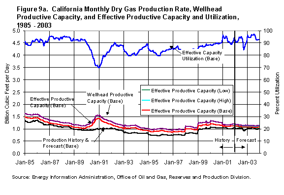
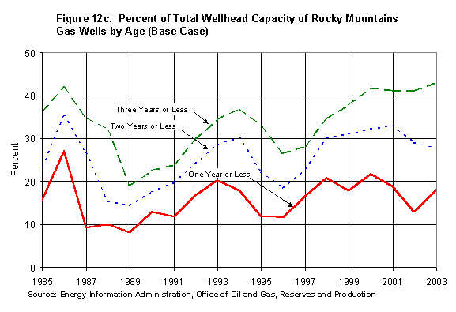
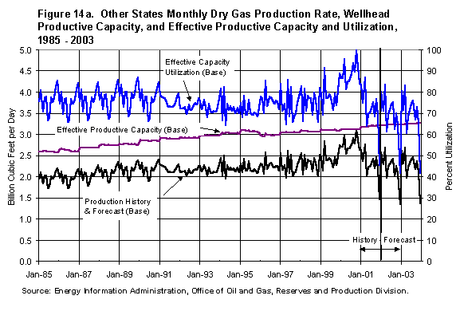

Executive
Summary
This analysis examines the availability of effective productive capacity
to meet the projected wellhead demand for natural gas through 2003. Effective
productive capacity is defined as the maximum production available from
natural gas wells considering limitations of the production, gathering,
and transportation systems. Surplus or unutilized capacity is the difference
between the effective productive capacity and the actual production. This
report contains projections of natural gas effective productive capacity
in the Lower-48 States for 2003 and is based on prices and production forecasts
in EIA's February 2003 Short Term Energy Outlook (STEO).
The analysis projects an average surplus capacity of 5.6 Bcf/d in 2003 under
STEO Base case conditions, indicating that projected demand for natural
gas in that scenario can be met (Figure ES-1, Table ES-1). However, the
relatively narrow margin of surplus capacity - roughly 10 percent of the
projected 51.4 Bcf/d average production rate in 2003 - limits the available
production response to any sudden demand increase or drop in production
because of severe weather or other event. Withdrawals of stored natural
gas can respond to such problems, just as they are regularly used during
peak winter periods when daily natural gas demand can be more than 1.5 times
daily production. Nonetheless, the narrow surplus margin indicates a significant
potential for short-term price increases in the event such contingencies
occur.
Maintaining or increasing gas well drilling is critical to maintaining or
increasing gas productive capacity. About 25 percent of estimated wellhead
capacity is from wells one year old or less. The two largest supply areas,
Texas and the Gulf of Mexico, which together produce about 50 percent of
the nation's total gas production, also have the highest percentage of capacity
from wells one year old or less at 30 percent. If drilling were to stop
completely, all surplus or unutilized wellhead capacity would vanish in
less than a year.
Recent trends in productive capacity have closely tracked the number of
well completions. The year 2001 had a large increase in completions, reaching
22,800 and capacity increased. There were only 17,000 well completions in
2002, a large drop, and productive capacity declined. A large increase in
completions is projected for 2003, about the same increase as in 2001, and
effective productive capacity is projected to increase by about 2 Bcf/d.
Fifty six percent of the expected 2003 increase in well completions is forecast
to occur in Texas and the Rocky Mountain Area. Rocky Mountain well completion
increases are largely due to coal bed methane drilling in the Powder River
Basin.
The Rocky Mountain area is projected to have the largest estimated surplus
capacity in 2003 at 1.4 Bcf/d followed by Texas with 1.3 Bcf/d, New Mexico
at 0.5 Bcf/d, and Oklahoma at 0.4 Bcf/d. Estimated surplus capacity in the
rest of the Lower-48 States and Gulf of Mexico is roughly 2.0 Bcf/d. While
the Lower-48 States taken together are likely to have a small surplus or
unutilized capacity, specific areas may have little or none. Because of
the limitations in the transportation network, surplus capacity in one area
may not be available to all other areas.
Because of exceptional growth in well completions in the Rocky Mountain
Area, growth in effective productive capacity in that region is expected
to be limited in the short term by a slower growth rate of the delivery
infrastructure. Based on historical experience, infrastructure capacity
was assumed to grow at approximately 1/3 the wellhead productive capacity
growth rate. This limitation reduces estimated Rocky Mountain surplus or
unutilized capacity in 2003 from 2.7 to 1.4 Bcf/d.
In 2003, the forecast indicates that Gulf of Mexico production will be limited
by effective productive capacity. Lower drilling rates in the Gulf are the
cause of the expected loss of surplus effective capacity. However, deep
water prospects now being developed appear to produce at higher rates than
completions in the recent past. Future completions in the study are modeled
after recent past completions. Therefore, if the new wells are sufficiently
more productive, some of the declining capacity indicated in this study
could be alleviated. Adding to pipeline infrastructure could also increase
effective productive capacity in the Gulf.
Introduction
- An important issue facing the U.S. natural gas markets is whether
or not natural gas production will rise to meet expected growth in demand.
However, lags of several months in the availability of natural gas production
data, and the fact that production data tends to be revised upward over
time, leaves considerable uncertainty regarding the supply response
resulting from current drilling levels.
- This assessment attempts to estimate the natural gas productive capacity
that should be expected given recent natural gas drilling and price
trends.
- This report contains projections of natural gas effective productive
capacity in the Lower-48 States for 2003. The effective productive capacity
is an upper limit on the amount of natural gas that could be produced
in 2003 by region and by month.
- Until 2001, EIA made these projections by summing the maximum measured
monthly production rates of each well in each year (wellhead capacity),
tacitly assuming that all wells could produce maximally at the same
time. However, a review of the historical data showed that all wells
cannot produce at their wellhead capacity at the same time, mainly because:
- Field processing equipment has limitations that prevent handling
the maximum wellhead capacity production of every well concurrently.
- Some gathering and pipeline systems cannot handle peak wellhead
capacity production from all wells concurrently within certain geographical
areas.
- Compression capabilities may be less than the peak wellhead capacity.
- Some natural gas plant throughput capabilities are lower than
peak wellhead capacities.
- Since 2001, EIA has calculated an effective productive capacity,
which better reflects the ability of producing wells to deliver gas
into the gathering and transportation system. Projections from this
methodology will not be exact but are within reasonable accuracy to
provide a better indication of surplus or unutilized effective productive
capacity.
Recent History
- Lower oil and gas prices in 1998 and early 1999 resulted in reduced
gas rig counts, reduced new gas well completions, and a decline in capacity.
This increased the effective productive capacity utilization rate to
between 90 and 92 percent (8 to 10 percent surplus capacity). The anomalous
data in September 1998 is the result of production being shut in for
hurricanes (Figure ES1).
- Capacity utilization rates above 90 percent create the potential
for higher natural gas prices. Figure 1 shows that monthly average wellhead
natural gas prices have stayed below $3.00 per Mcf whenever capacity
utilization remains below 90 percent. Capacity utilization rates above
90 percent are consistent with a much wider range of prices.
- Supply tightness, along with low gas storage levels and higher demand,
created the conditions for the rising prices realized in 2000 and early
in 2001 (Figure 2). These higher prices stimulated drilling and increased
gas completions to approximately 2020 completions per month in mid-2001
with over 1000 rigs searching for gas and increasing capacity in 2001.
- The increasing capacity through 2001, in turn, caused the capacity
utilization to drop to about 90 percent and lessen the potential for
high prices. The Lower-48 average gas price declined from a January
2001 high of $8.16 to a low of $2.17 per thousand cubic feet (Mcf) in
February 2002.
- Declining prices reduced gas completions to 17,000 in 2002. The gas
rig count dropped to approximately 600. The previous report, "Natural
Gas Productive Capacity for the Lower-48 States" May 2001, anticipated
this trend. The decrease in gas prices, drilling, and completions in
late 2001 and early 2002 caused a decrease in productive capacity in
early 2002.
- Monthly natural gas prices returned to the $3.00 per Mcf range in
April 2002 and are expected to peak in February 2003 at $4.74 per Mcf
before stabilizing in the range of $3.90 to $4.28 per Mcf for the remainder
of 2003 (Table 1). Gas completions are expected to increase to 2000
per month by November 2003 with a gas rig count of 970 (Base Case) (Figure
2). Capacity began to increase in mid-2002 and continues to increase
as gas prices and completions remain at high rates relative to recent
historical rates. The effective capacity utilization is projected to
remain at or above 90 percent through most of 2003 (Base Case) indicating
that sudden changes in demand or supply such as severe cold weather
or storms that require wells to be shut in could cause short term shortages
and high prices until the gas system adjusts.
Methodology
- The effective productive capacity is the estimated maximum production
available for use from natural gas wells. It is a demonstrated limit
that is lower than the wellhead capacity. It reflects the ability of
producing wells to deliver gas into the gathering and transportation
system.
- To estimate the effective productive capacity, the wellhead productive
capacity must first be estimated for all wells. The monthly wellhead
capacity projections are the sum of capacity forecasts for older wells
and new wells.
- To estimate old well capacity, the wells are grouped by vintage
year. Productive capacity is modeled for each vintage using a hyperbolic
function relating the peak monthly production rates to cumulative
production. A monthly projection is made for each vintage and then
all vintages are summed.
- In areas that have significant coal bed methane production after
1987, the coal bed wells and their respective production history are
summarized by vintage. A growth curve relating the average production
rate per well to the cumulative production per well and a separate
decline curve are fit to the data and merged at the peak rate.
- New well capacity is a function of the number of new well completions,
which depends on the monthly drilling rig forecast based on the monthly
price and production forecasts in EIA's Short Term Energy Outlook
(STEO).
- The Drilling Rig Model uses oil and gas revenue to project total
active rigs and the percent of rigs drilling for gas. A well
completion/rig ratio for each of the ten U.S. supply areas is
used to convert the number of gas rigs to well completions. This
conversion includes an efficiency factor that models the efficiency
losses normally seen when the number of drilling rigs increases.
- The wellhead capacity to produce gas from these new well completions
is estimated by an average growth curve for the first 12 months,
and a hyperbolic function relating monthly production rate to cumulative
production and calibrated to the most recent 3 years of data for
conventional wells. New coal bed methane wells use an average growth
curve and decline rate as determined by the last 3 data years.
- The effective capacity utilization rate is the ratio of the
production to the effective productive capacity.
- The production forecast is based on the U.S. production forecast
in the most recent STEO.
- The U.S. production forecast is distributed among the ten supply
areas considered in this study according to each area's monthly share
of production during the past two years.
- Each area's effective productive capacity is then compared to its
monthly production forecast. If the area's production forecast is
greater than the estimated effective productive capacity, the unmet
production requirement is allocated to other supply areas that have
surplus or unutilized effective productive capacity.
- Surplus (unutilized) capacity is defined as the difference
between the estimated effective productive capacity and the projected
production.
Note: This study uses average monthly values, which do not reflect
phenomena - such as a severe cold snap - that might push production to full
capacity (100% utilization rate) for a short time. Monthly peak winter natural
gas demand is usually 1.5 times or greater than natural gas production;
the deficit is met by withdrawals from natural gas storage and imports.
Potential uncertainties of up to several percent may exist in some monthly
production and effective productive capacity estimates used in this study.
Description of Areas
- The Lower-48 States are divided into 10 areas for analysis (Figure
3).
- The Federal Offshore Gulf of Mexico and the states of Texas, Oklahoma,
Louisiana, New Mexico, California, and Kansas were evaluated separately.
- The producing states combined to create the Rocky Mountain area
are Colorado, Montana, North Dakota, Utah, and Wyoming.
- The Southeast area is made up of Arkansas, Mississippi, and Alabama.
- The area titled "Other" includes eighteen states that have no individual
well data available for the determination of wellhead capacity or
produce very small volumes. The eighteen states are:
| Arizona |
Michigan |
Oregon |
| Florida
|
Missouri |
Pennsylvania |
| Illinois |
Nebraska |
South
Dakota |
| Indiana
|
Nevada
|
Tennessee |
| Kentucky |
New York |
Virginia |
| Maryland |
Ohio |
West Virginia |
- The 10 Areas can be grouped by producing rates.
- Federal Offshore and Texas are the largest producers at approximately
13 Bcf/d each. Each produces approximately 25 percent of the Lower
48 rate (50 percent when combined).
- The states of New Mexico, Oklahoma, Louisiana, and the Rocky Mountain
area each produce approximately 3.8 to 6.0 Bcf/d. When combined, this
volume is approximately one third of the Lower 48 total.
- The remaining states and groups of states (California, Kansas,
and Southeast) produce less than 2.0 Bcf/d each and the area designated
Other produces approximately 2.3 Bcf/d. The sum of daily production
from California, Kansas, and the Southeast area in 2003 is projected
to be 8.1 percent of total production. Production from states in the
Other area is projected to 4.4 percent of the total production.
Figure 3. Analysis Areas for Gas Capacity Study
Results by Area
- Lower-48 States
- Average effective productive capacity is expected to exceed production
by 5.6 Bcf/d in 2003 in the Lower-48 States (Base Case). Average production
for 2003 is projected to be 51.4 Bcf/d (Figure 4a). However, the Low
Case shows the capacity difference becoming smaller by the end of
2003 when compared to the Base Case production.
- Maintaining gas well drilling is critical to maintaining gas productive
capacity. The 17,000 gas well completions in 2002 were not quite enough
to replace the capacity decline from all the older wells producing
at the end of 2001. The effective productive capacity declined about
1.5 Bcf/d in 2002. Completions are projected to increase by 5,800
in 2003 to about the same level as in 2001. Effective productive capacity
is projected to increase about 2 Bcf/d in 2003.
- Effective capacity utilization is at or above 90 percent for most
of 2003 in the Base Case.
- The number of gas well completions added each year has increased
from 13,000 - 14,000 per year prior to year 2000 to 22,800 in 2001.
Completions added in 2002 decreased to 17,000 but are expected to
increase to the 22,800 level again in 2003 (Base Case). The majority
of the increase is in Texas and the Rocky Mountain area (Figure 4b).
- Completions that are one year old or less contribute 25 to 30 percent
of the total wellhead capacity and completions three years old or
less contribute slightly more than 50 percent of the total wellhead
capacity (Figure 4c). One reason for higher percentages of production
capacity from new wells is improved completion technology that allows
high rates of production (and therefore higher depletion rates) from
new wells. If drilling were to stop completely, all surplus wellhead
capacity would vanish in less than a year.
- Federal Offshore Gulf of Mexico
- The Federal Offshore Gulf of Mexico is one of the highest producers
of gas at 13 - 14 Bcf/d. Production is at 95 to100 percent of effective
capacity and has been at 90 to 95 percent since 1993 (Figure 5a).
- The difference between wellhead capacity and effective capacity
is large because of infrastructure limitations. Small changes in infrastructure
such as pipeline or processing improvements could result in significant
improvement in effective capacity.
- Current surplus capacity of approximately 0.5 to 0.8 Bcf/d is expected
to decline to 0.24 Bcf/d in 2003 because of a projected decrease in
drilling.
- New completions added in 2002 are at their lowest level in 10 years.
Rigs drilling for gas in the Gulf of Mexico are expected to increase
the number of completions in 2003 based on the STEO Base Case forecast
but the number of completions are expected to remain low compared
to 1995 through 2001 (Figure 5b).
- As a result of decreased drilling in the Federal Offshore Gulf
of Mexico during the past several years, the average unutilized effective
productive capacity is expected to decrease to 0.24 Bcf/d in 2003.
- High initial rates and high production decline rates of offshore
wells explain why wells one year old or less contribute over 30 percent
of total wellhead capacity. Wells two years old or less contribute
over 50 percent of total capacity and three year old or less wells
contribute about 65 percent of total wellhead capacity.
- Texas
- Texas wells also produce approximately 13 Bcf/d. Effective capacity
utilization is approximately 90 percent with average surplus capacity
of 1.32 Bcf/d in 2003 (Figure 6a).
- Along with the expected capacity increase, production is expected
to be 13 Bcf/d by the end of year 2003.
- New gas well completions for Texas in 2003 are expected to be approximately
6,000 (500 per month), an increase to near peak rates of year 2001,
causing capacity to increase (Figure 6b).
- The capacity of one year old or less wells in Texas represents
nearly 35 percent of total wellhead capacity. Three year old or less
wells have 60 percent of the wellhead capacity (Figure 6c).
- Oklahoma
- Oklahoma's effective capacity utilization is projected to reach
95 percent in 2003.
- The average difference between effective productive capacity and
production is expected to be 0.4 Bcf/d in 2003 (Figure 7a).
- Gas well completions in Oklahoma in 2003 are expected to remain
high at 1880 to 2000 (157 to 163 per month) allowing production to
increase from an average in 2002 of 4.26 Bcf/d to an average of 4.33
Bcf/d in 2003 (Figure 7b).
- The percentage of wellhead capacity contributed by one year old
or less completions in Oklahoma has increased from 12 percent to 22
percent in the last 10 years. Wells two years old or less and also
the three year old or less completions show a similar increase in
percentage of wellhead capacity over the last 10 years.
- The contribution to wellhead capacity of three year old or less
completions is approaching 50 percent of total capacity (Figure 7c).

- Louisiana
- Louisiana has very little surplus effective capacity (approximately
0.16 Bcf/d) with effective capacity utilization averaging over 95
percent (Figure 8a).
- Louisiana is a mature area. Recent drilling is able to develop
sufficient new capacity to maintain production at the present level
and to add a small surplus capacity of 0.16 Bcf/d in 2003.
- An increase of gas well completions to approximately 750 is projected
to maintain Louisiana production at 4.0 Bcf/d and to create a small
surplus of 0.16 Bcf/d in 2003 (Figure 8b) but to increase capacity
and production significantly, an additional increase in completions
would be necessary. Limited drilling prospects of this mature area
cause the rates to remain stable and surplus capacity to remain small.
- Recently completed wells in Louisiana provide an increasing share
of total wellhead capacity over the last 10 years. One year old or
less wells now contribute 30 percent of the total wellhead capacity
while wells that are 3 years old or less contribute over 50 percent
of total capacity with that value approaching 55 percent in 2003 (Figure
8c).
- California
- California gas production is 1.0 Bcf/d with less than 0.1 Bcf/d
surplus capacity (Figure 9a).
- The vast majority of California gas production is associated gas
from oil wells (currently about 80 percent).

- The number of gas wells added is small at an average of 10 per
month (Figure 9b).
- Wells in California that are one year old or less contribute 25
percent of the total wellhead capacity and wells of three years old
or less contribute 45 percent of total wellhead capacity (Figure 9c).
- Kansas
- Kansas gas production is approximately 1.4 Bcf/d with 0.18 Bcf/d
surplus effective capacity projected for 2003.
- Additional capacity is not expected from this area (Figure 10a).
- Gas well completions in Kansas have declined from over 800 in 1995
(65 per month) to 230 in 1999 (20 per month) (Figure 10b). The long
term trend is decreasing but there are several recent years of increasing
completion activity. This completion trend indicates an area that
is becoming mature with less potential to maintain drilling activity.
- Wells that are one year old or less contribute about 8 percent
of total capacity in Kansas. Wells three years old or less contribute
about 17 percent of total wellhead capacity (Figure 10c).
- New Mexico
- Forty percent of New Mexico's 4.2 Bcf/d production is from coal
bed methane wells. Effective capacity utilization exceeds 90 percent
for most of 2003.
- Coal bed methane production in New Mexico is declining and only
0.22 Bcf/day of surplus effective coal bed methane capacity is available
from coal bed wells (Base Case).
- Conventional gas wells are producing at 90 percent of effective
capacity with a surplus capacity in 2003 projected at 0.25 Bcf/day.
- Total New Mexico gas wells have surplus effective capacity of 0.47
Bcf/d (Figure 11a).
- New gas well completions per year have increased from 517 in 1995
(45 completions per month) to an expected 1,585 (130 completions per
month) in 2003 in New Mexico (Figure 11b).
- Well completions one year old or less in New Mexico contribute
less than 20 percent of total capacity, an increase from 5 percent
in 1995. Completions that are three years old or less contribute 33
percent of total wellhead capacity, an increase from 15 percent in
1996 (Figure 11c).
- Rocky Mountain Area
- The Rocky Mountain Area gas production has increased from 4 billion
cubic feet in the mid-1990's to the current rate of 6 Bcf/d with much
of the increase coming from coal bed methane.
- Current conventional and coal bed production of 6 billion cubic
feet per day is expected to be maintained through 2003 with coal bed
methane production expected to increase to 2.3 Bcf/day by 2003 from
an average of 1.9 Bcf/d in 2002.
- In the Rocky Mountain Area wellhead capacity is growing at a faster
rate than the infrastructure. Therefore, the effective capacity growth
is assumed to be one-third of the wellhead capacity growth rate resulting
in a surplus or unutilized capacity of 1.4 Bcf/d rather than 2.7 Bcf/d
in 2003.
- Additional pipeline capacity is expected to alleviate the infrastructure
limitations (Figure 12a).
- Gas well completions in the Rocky Mountain area have increased
from 1,270 in 1996 to 6,870 in 2001. After a decrease to 4,850 in
2002 an increase to 6,550 is expected in 2003. Most of the increase
was in the number of coal bed wells completed (Figure 12b).
- Completions one year old or less in the Rocky Mountain area contribute
approximately 17 percent of total wellhead capacity. The wellhead
capacity of wells three years old or less exceeds 40 percent of total
capacity (Figure 12c).

- Southeast Area
- Coal bed methane production from the Southeast area is expected
to average 0.52 Bcf/d and conventional gas production is projected
to average 1.24 Bcf/d in 2003. Surplus effective productive capacity
from this area is 0.36 billion cubic feet per day (Figure 13a).
- The number of completions in the Southeast area has doubled since
1993 - 1999 to over 800. The new completions one year old or less
contribute 20 percent of the total wellhead capacity and three year
old or less completions contribute 45 percent of total wellhead capacity
(Figures 13b and 13c).
- Other Area
- States that are not included in the nine areas analyzed produce
2.25 Bcf/d of natural gas.
- There is not sufficient monthly information available to analyze
the effective capacity of these States; therefore, the effective capacity
is assumed to equal the wellhead capacity of 3.2 Bcf/day (Figure 14a).

- There are approximately 3,000 gas well completions added each year
from 1986 through 2002 in the eighteen states combined in the Other
Area (Figure14b). An increase to over 3,700 completions is expected
in 2003.
Conclusions
- Average surplus or unutilized capacity (the difference between expected
effective productive capacity based on model forecasts of rigs drilling
for gas and forecast production demand from the February 2003 Short
Term Energy Outlook for the Lower-48 States) is projected to be
5.6 Bcf/d through 2003 (Table 2). Estimated effective productive capacity
is therefore expected to be sufficient to meet the forecasted demand
for gas during 2003.
- The projected 2003 Base Case surplus of 5.6 Bcf/d is 10 percent of
the projected production rate of 51.4 Bcf/d. This is relatively small
compared to the surplus margin between 1985 and 1995 but is similar
to the period 1996 to 1999.
- The high utilization of effective productive capacity indicates market
supply is relatively tight with a potential for short-term price increases
should there be a sudden increase in demand or drop in production because
of severe weather or other problems.
- The gas well completions in 2002 were sufficient to maintain production
but effective capacity declined. Increased completions in 2003 by 5,800
to 2001 levels are expected to increase effective capacity about 2 Bcf/d
through 2003.
- Due to infrastructure limitations, available surplus in the Rocky
Mountain Area is estimated to be 1.4 Bcf/d, notwithstanding the rapid
development of coal-bed methane resources. Absent such limitations,
the estimated effective surplus would be 2.7 Bcf/d.
- Texas estimated surplus capacity of 1.32 Bcf/d is exceeded by the
infrastructure limited Rocky Mountain area surplus of 1.4 Bcf/d in 2003
and is the largest estimated unutilized capacity.
- Anticipated reduction in drilling in the Gulf of Mexico will cause
its effective productive capacity utilization rate to approach 100 percent
in 2003.
- Additional uncertainty surrounds the estimates for effective productive
capacity in the Gulf of Mexico and Rocky Mountain Areas. The possible
development of high rate completions in the deep water or deep shelf
area of the Federal Offshore Gulf of Mexico and the completion of gas
pipelines in the Rocky Mountain Area and Gulf of Mexico could increase
effective capacity more than accounted for in the current estimates.
- Completions that are one year old or less contribute approximately
25 percent of the total wellhead capacity.
- Two year old or less completions contribute 40 percent of total wellhead
capacity.
- Three year old or less completions contribute slightly more than
one half of the total wellhead capacity.
Data Sources
- Production History: Energy Information Administration, Office of
Oil and Gas; and IHS Energy.
- Productive Capacity: Model GASCAP94 C102500.
- Price Forecast: Energy Information Administration, February 2003
Short Term Energy Outlook
- Production Forecast: Energy Information Administration, Short-Term
Integrated Forecasting System, February 2003; and Model GASCAP94 C102500.
- Well Completions History: Energy Information Administration, Office
of Oil and Gas; and IHS Energy.
- Well Completions Forecast: Energy Information Administration, Office
of Oil and Gas, Drilling Rig Model; and Model GASCAP94 C102500
- Previous Report: The previous report is available on the web and
can be accessed for more details on the gas capacity process and model
at
Natural
Gas Productive Capacity for the Lower 48 States 1986-1998
and
Natural
Gas Productive Capacity for the Lower 48 States 1985-2001.
- Methodology Documentation: A functional description of the methodology
used in this analysis will be available on the EIA website in approximately
90 days.
- The associated spreadsheets containing the history and projections
of this report can be obtained by clicking on the following Excel files:
gascapdata.xls, ratiodata.xls,
and wellcountdata.xls.
|